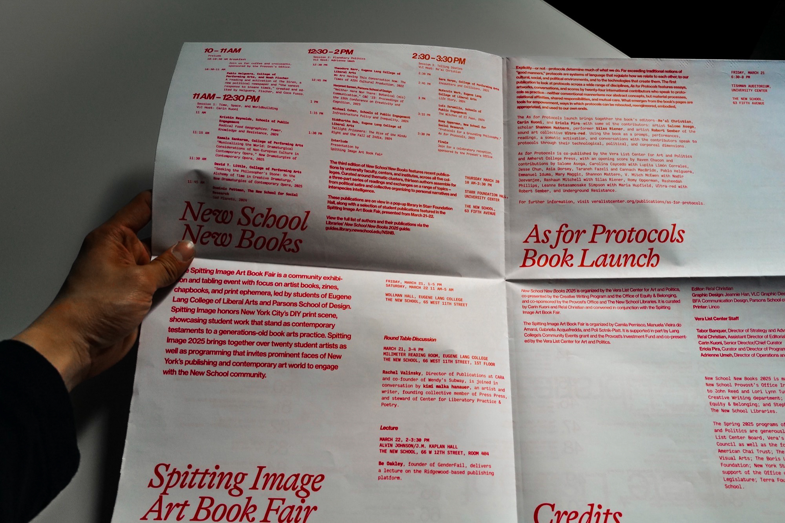
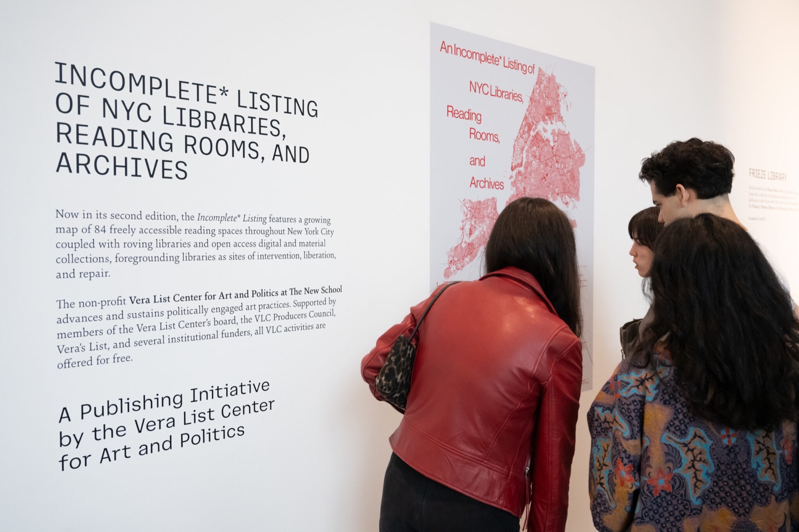
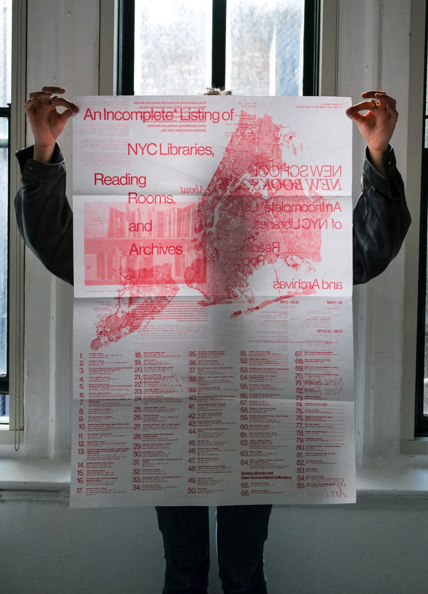
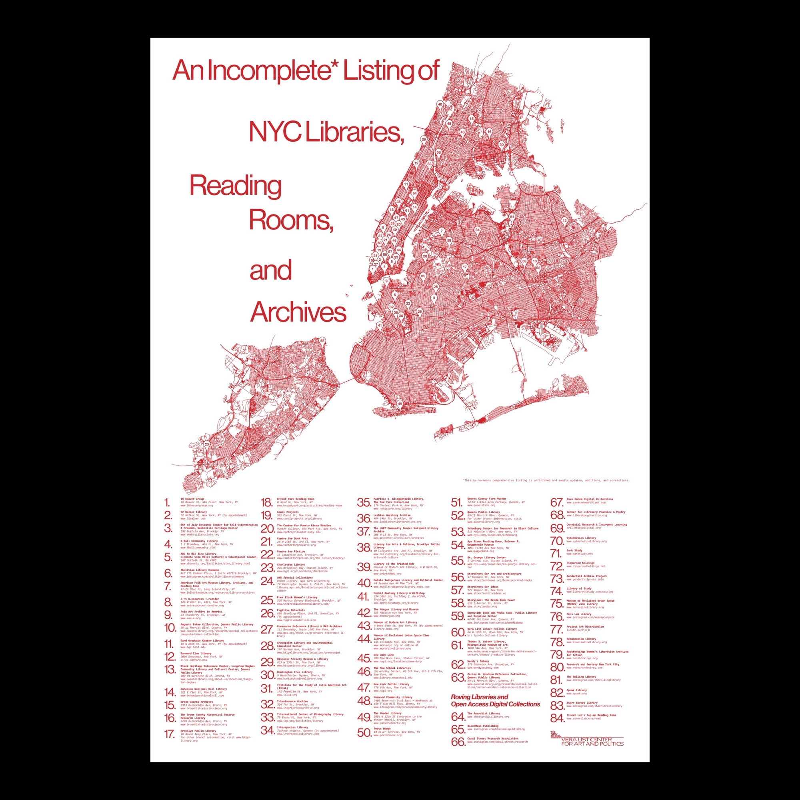
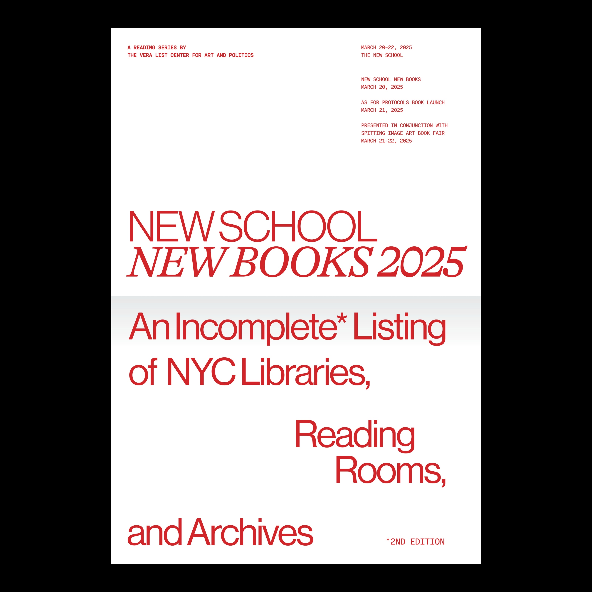
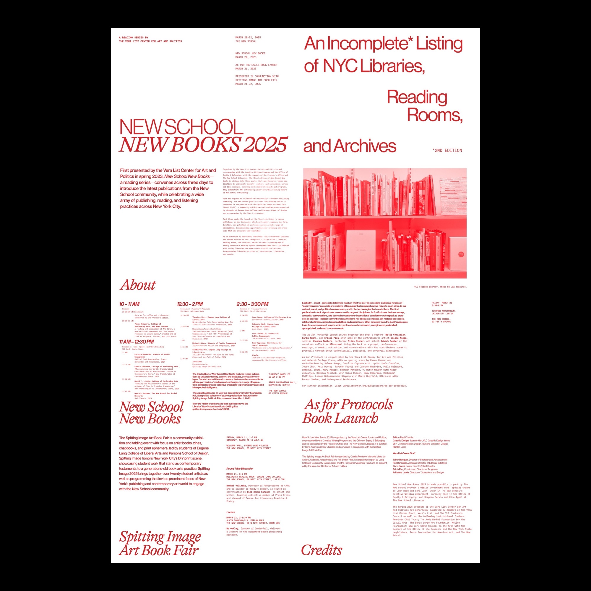

“An Incomplete* Listing of NYC Libraries, Reading Rooms, and Archives” accompanies New School New Books 2025, a reading series co-presented by the Vera List Center for Art and Politics and The New School. This broadsheet features a growing map of freely accessible reading spaces throughout New York City, along with roving libraries and open digital collections.
As an extension of the 2024 edition created in collaboration with the C& Center of Unfinished Business at The New School and the recent edition for An Incomplete* Listing of Los Angeles Libraries, Reading Rooms, and Archives, this publication serves as an evolving resource and tool for New York City’s 8.5+ million residents.
IT’S IMPACT
This broadsheet serves as an advocacy tool and map designed to promote and protect freely accessible public spaces for reading, research, and community.
Originally created in response to federal threats to defund vital cultural agencies like the Institute of Museum and Library Services (IMLS), the project highlights both traditional public libraries and independent, specialized archives. By mapping these locations, it acts as a platform for civic engagement, emphasizing that these shared physical spaces are critical sites for education and cultural intervention.





